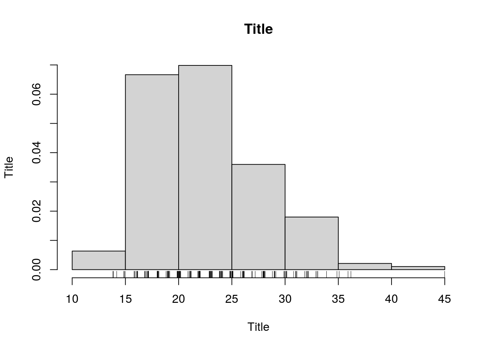
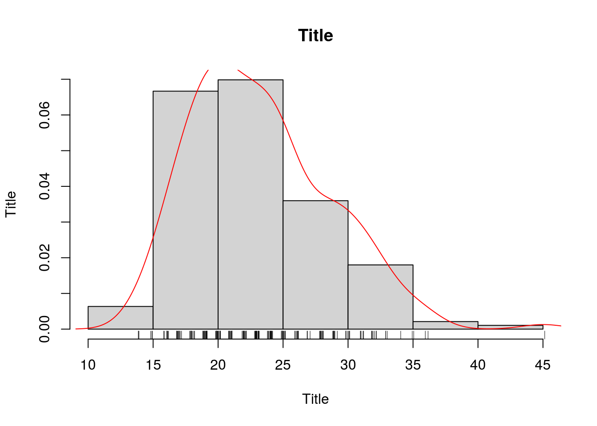

Chapter 3
3.0.1 1.2.4.Gráficos
3.0.1.1 1.2.4.1.Correlação
3.0.1.1.1 1.2.4.1.1.Preditores contínuos
Função:
x é o preditor 1, na abscissa y é o preditor 2, na ordenada main é o título do gráfico xlab é o título da abscissa ylab é o título da ordenada
3.0.1.1.2 1.2.4.1.2.Preditores categóricos
Função:
x é o preditor 1, na abscissa y é o preditor 2, na ordenada main é o título do gráfico
xlab é o título da abscissa
ylab é o título da ordenada
OBS: é possível identificar no boxplot os limites, outliers, terceiro, segundo (mediana) e primeiro quartis.
3.0.1.2 1.2.4.2.Histogramas
Função:
BD <- readxl::read_excel("data/lbw.xlsx") # Requer lib reaxl
hist(BD$age, main = "Title", xlab = "Title", ylab = "Title", prob = T)
rug(jitter(BD$age))#;lines( density(x),col="red" ) x é a variável de interesse main é o título do gráfico xlab é o título da abscissa (Variável)
ylab é o título da ordenada (Frequência)
Breaks são pontos de divisão de cada coluna, na abscissa
rug/jitter mostra a distribuição fina de frequência, na abscissa
3.0.2 1.2.5.Exercícios
3.0.2.1 1.2.5.1.Qual a idade materna média no grupo de fumantes e não fumantes?
## 0 1
## 23.42609 22.945953.0.2.2 1.2.5.2.Plote o gráfico da distribuição das idades maternas analisadas
hist(BD$age, main = "Title", xlab = "Title", ylab = "Title", prob = T)
rug(jitter(BD$age));lines( density(BD$age),col="red" ) #### 1.2.5.3.Qual a mediana do peso materno entre as raças?
## 1 2 3
## 129.5 129.0 119.03.0.2.3 1.2.5.4.Qual a moda da idade materna entre os grupos com e sem hipertensão?
## $`0`
## [1] 20
##
## $`1`
## [1] 19 21 22 25